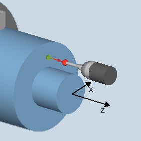

With this measuring variant, workpiece dimensions can be measured at front edges and from these offsets derived.
The measurement result, the measurement difference, can be used as follows:
Correction of a zero offset
Offset of a tool
Measurement without offset
The measuring cycle determines the actual value of a measuring point at a front edge of the turned part, relative to the workpiece zero.
The difference between the actual value (measured value) and a specified setpoint in the 1st axis of the plane is calculated (for G18: Z).
An extended tool offset in the summed and setup offsets is possible.
For the tool offset, generally empirical values can be included in the calculation.
Measure: Front edge (CYCLE974)
The probe must be calibrated in the measuring direction and active as tool. The probe type is 580.
The cutting edge position can be 5 to 8 and must be suitable for the measurement task.
If necessary, the workpiece must be positioned in the correct angular spindle position with SPOS.
The probe must be positioned opposite the surface to be measured and is reached by traversing the measuring axis in the setpoint direction in the measuring cycle.
When the measuring process is complete, the probe is positioned at the distance of the measurement path from the measuring surface.
See also:
Measure: Front edge (CYCLE974)